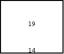
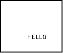

Introduction:
In this tutorial we will learn our last command, randInt(. This really has nothing to do with the rest of the commands that I have taught you. In fact it isn't even a PRGM command, but a MATH command. I just had to insert this last tutorial because you need the command for the game in the next tutorial. The command is fairly easy to grasp, because all it does is pick a random number (an integer) between the range that you set.
Generates and displays a random integer within a range
randInt(lower,upper[,numtrials])
The Codes:
There are going to be two separate codes: one shows you the basic way of using randInt in a program and the second is a fun little program that I like to put on people's calculator. However, before even getting to the codes, I want you to really grasp how randInt works. Before entering the program editor, I want you to go to the home screen and enter the randInt command. I want your calculator to display a random number between 1 and 50, so it should look like this randInt(1,50). I don't want any trials. Okay, press and you should see a number that's between 1 and 50. Now press again, and a new number between 1 and 50 should appear. If it so happened that the same number appeared, then the 1 in 50 chance happened and the randInt command pick the same number again. Just press enter again and there should be a new number. Now keep on pressing Í until you see the same number twice. I just want you to really see how the randInt command works. Now on to the codes:
:
For AShell, SOS, and TI-Explorer
Lbl 1
0B
Stores 0 into X
Repeat A=19
Repeat everything until the random number is 19
ClrHome
Clears the home screen
B+1B
Add one to X every time it repeats
randInt(1,20)A
Picks a random integer between 1 and 20
Output(4,8,A)
Displays that random number on line 4
For(X,1,100)
This construction is used so that we will be able
End
to see the random number for a short while
End
End Repeat Loop
Output(8,8,B)
Displays the number of times it took to get to 19
An example of a final output: 
This program just keeps on displaying random numbers between 1 and 20 until the random number is 19. If it so happens (it happened to me when I was testing the program) that the first random number is 19, just run the program again. User variable B in this program is the number of times it took for the random number to be 19. So if the number at the bottom (B) was 23, that means that 19 appeared on the 23rd try. You better study that because you'll need it in the next tutorial. The next program is a fun little program:
:
For AShell, SOS, and TI-Explorer
Lbl 1
ClrHome
Clears the home screen
randInt(1,8)A
Picks a random integer between 1 and 8
randInt(1,12)B
Picks a random integer between 1 and 12
Output(A,B,"HELLO")
Displays "HELLO" in a random spot
For(X,1,100)
This construction is used so that we will be able
End
to see the random number for a short while
Goto 1
Go to Label 1
A possible output: 
As you have probably noticed, the program doesn't stop. This is an endless loop (I did this on purpose) and it only stops unless you press and then or press and [OFF]. I was thinking of putting in a For statement that would let it display "HELLO" in a random spot for a certain number of times, but I decided to do it this way just so you would learn how to break a program. However, when I make this program I use a command called getKey, so it'll stop displaying "HELLO" if I either: press and then , press and [OFF], or I press a particular key. To take a look at how this is done, you can go to Tutorial 21.
Version 2.0 Update:
After the first output of BASIC 83 Guru, I thought of another way to use randInt. This way of using randInt is if you want more than one choice to happen randomly after a certain situation occurs. randInt is accompanied by Goto & Lbl and If statements in this code. What if you wanted to make a "Magic 8 Ball" game, which had four different replies. You would want those replies to be randomly chosen, right? Well this is how you'd make such a game:
The Code:
:
For AShell, SOS, and TI-Explorer
Lbl A
ClrHome
Clears the home screen
Output(4,3,"MAGIC 8 BALL")
Displays text at row 4 and column 3
For(X,1,500)
This line and the next line are used to delay
End
the program for a couple of seconds
Lbl D
ClrHome
Clears the home screen
Output(3,2,"THINK OF YOUR")
Displays "THINK OF YOUR"
Output(4,3,"QUESTION AND")
Outputs text at row 3 and column 3
Output(5,1,"PRESS ENTER FOR")
Displays "PRESS ENTER FOR"
Output(6,4,"AN ANSWER.")
Outputs text at row 6 and column 4
Pause
Suspends program and waits for user to press
ClrHome
Clears the home screen
Output(4,5,"THINKING")
Displays "THINKING" on the screen for
For(X,1,500)
screen for a few seconds
End
randInt(1,4)C
Picks a random integer between 1 and 4
ClrHome
Clears the home screen
If C=1:Goto 1
If C equals 1, go to Label 1
If C=2:Goto 2
If C equals 2, go to Label 2
If C=3:Goto 3
If C equals 3, go to Label 3
If C=4:Goto 4
If C equals 4, go to Label 4
Lbl 1
Output(4,2,"DEFINITELY YES")
Displays "DEFINITELY YES"
Goto B
Goto Label B
Lbl 2
Output(4,2,"DEFINITELY NOT")
Displays "DEFINITELY NOT"
Goto B
Goto Label B
Lbl 3
Output(4,5,"MAYBE SO")
Displays "MAYBE SO"
Goto B
Goto Label B
Lbl 4
Output(4,1,"TRY AGAIN LATER")
Displays "TRY AGAIN LATER"
Goto B
Goto Label B
Lbl B
Pause
Suspends program and waits for user to press
Menu("AGAIN?","YES",D,"NO",C)
Ask if you want to play again
Lbl C
Possible output:
then AND
and
Further Explanation:
If you've run the program you can see that the opening screen comes up displaying "MAGIC 8 BALL" and it waits a few seconds and then asks you to think of the question that you want to ask the "Magic 8 Ball." When you press it displays "THINKING" for a while and then gives you the answer. I added that "THINKING" part, just so it gives the effect that the game is actually thinking. If I didn't put that part there, it would almost immediately give me the answer, which isn't very realistic. All of the answers have a 1 in 4 (equal) chance of appearing. Now what happens if you wanted "MAYBE SO" to have a better chance of occurring than all the other answers? What if you wanted it to be weighted? This is really easy. All you have to do is change two lines. Change the line that reads randInt(1,4)C to randInt(1,5)C and change the line that reads If C=3:Goto 3 to If C=3 or C=5:Goto 3. This makes the chance that "MAYBE SO" is displayed 2 out of 5 and the others 1 out of 5. You may be wondering what the command or does. Will it's pretty simple actually. If either one of the statements are true, it'll go to label 3. You can find or by pressing , , and then . Scroll down to 2:or. This construction of randInt is used a lot in "text only" games or RPGs (role playing games). It makes the games better because different outcomes can occur randomly. If a certain outcome was fixed, the program would be boring after the first couple of times playing it.
Conclusion:
Well, this is the last command that you'll learn before our big game. If you want to quickly review all the lessons up to this point, just click on the "Tutorials" link in either navigation bar. If you feel confident that you completely understand everything that I have taught you, then go on to The Big Game.
If you do not understand a particular part in this lesson, have suggestions, or find any problems please contact me.